在 LINE 上就能值班、回客人，不用開電腦
用手機點下面的按鈕，會在 LINE 裡打開工作台（第一次要輸入帳號密碼）：
連結：https://liff.line.me/2011237326-O66B14ms?staff=1
LINE 主頁 → 右上角「加入好友」→「搜尋」→ 選「ID」，輸入 @702iovsx，按「加入」。
已經是好友的跳過這步。
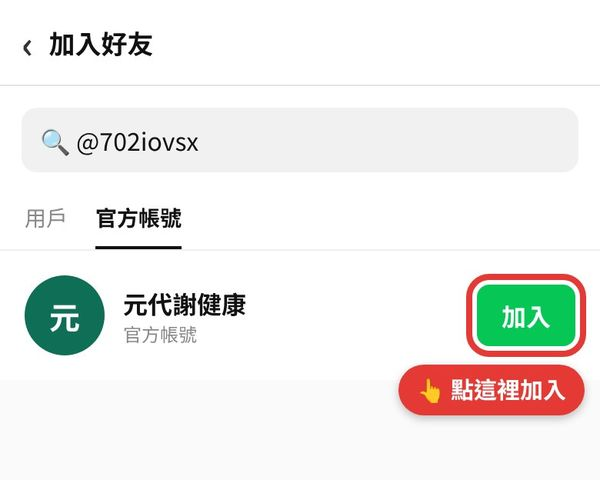
打開「元代謝健康」的聊天視窗，打這句話送出：
同事登記 你的全名
「同事登記」後面空一格，接你的全名（跟後台帳號的名字一樣）。例如：同事登記 吳婷婷
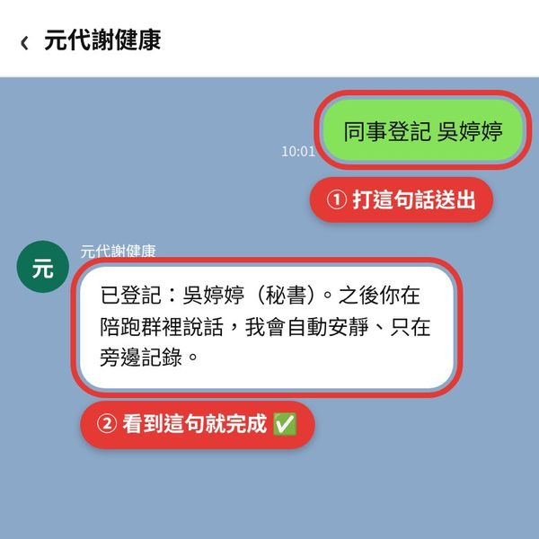
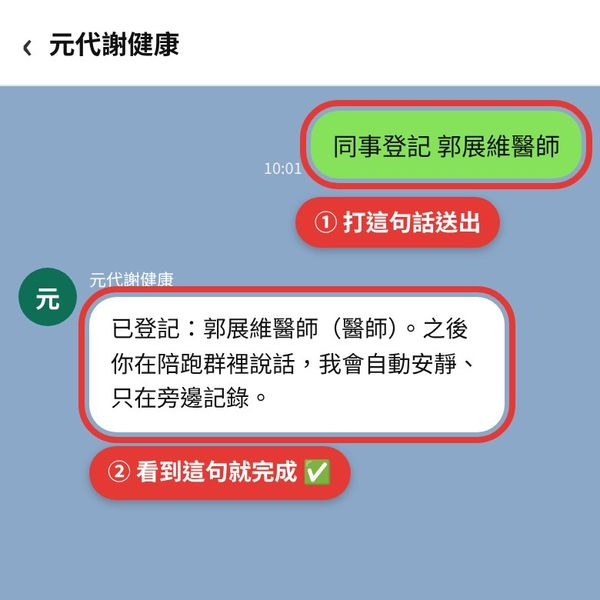
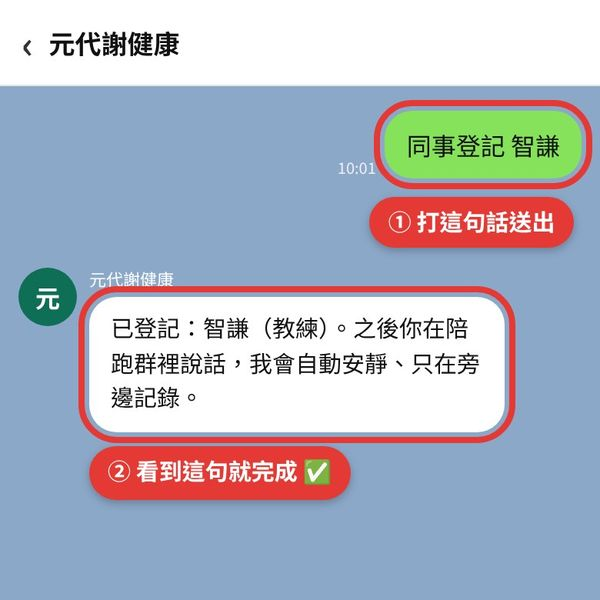
在同一個聊天視窗打 工作台 送出，會跳出一張卡片，按「打開工作台」。
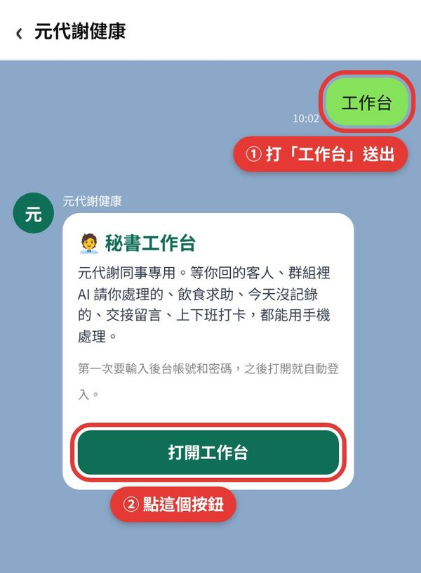
其他進入方式：①直接點上面的「👉 打開工作台」②打開客人 APP，點右上角的圓圈頭像 →「🧑💼 工作人員入口」③APP 登入畫面最下面「我是工作人員 ➜ 進入工作台」。
卡片上寫「秘書工作台」沒關係，進去後會自動變成醫師教練專用的畫面。
輸入私訊給你的帳號和密碼，按「登入」。
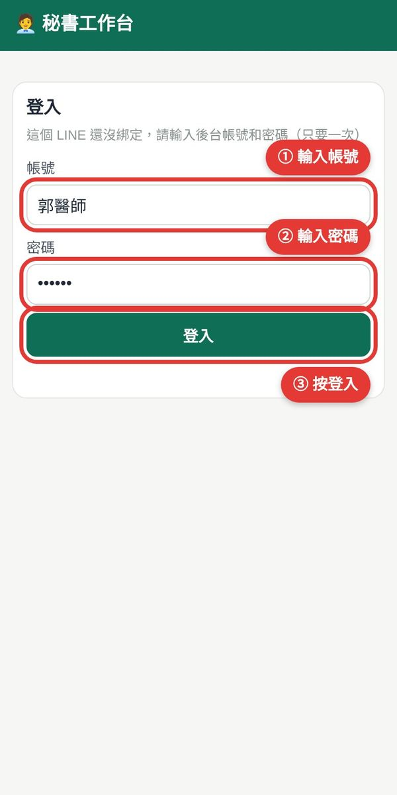
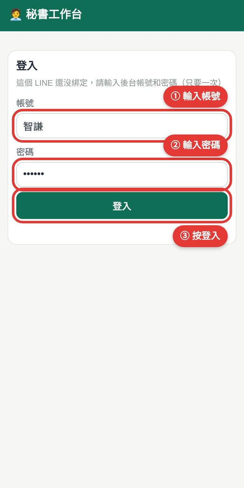
右上角出現你的名字就成功了。開始值班先按「上班打卡」。
最上面一排是分類，數字代表有幾件事在等你，點了會直接跳過去。
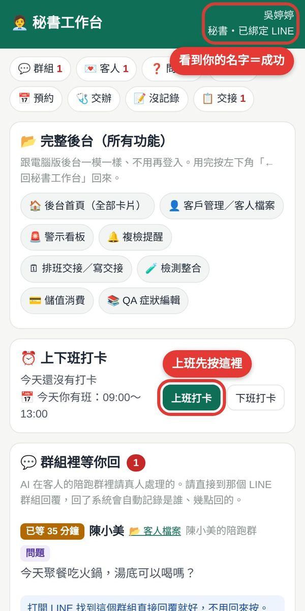
「客人在等你回」裡：點一句現成的話，或自己打字 → 可以附一個小禮物 → 按「送出回覆」。客人會在 APP 收到。
想看這位客人的完整資料，點名字旁的「📂 客人檔案」。
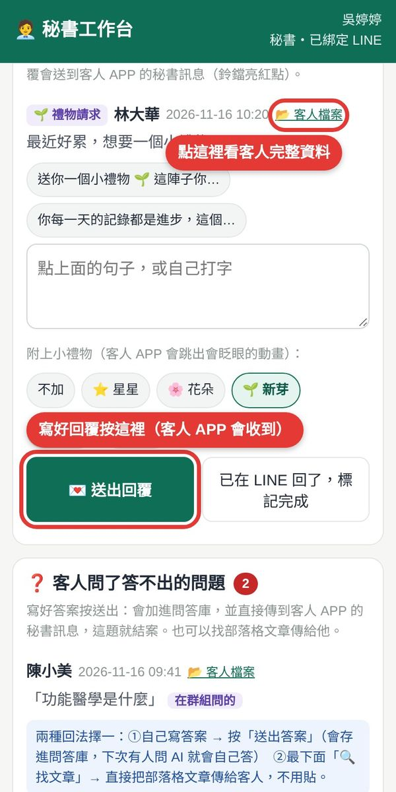
點「📂 完整後台」裡的按鈕，不用再登入就能進電腦版後台。看完按左下角「← 回秘書工作台」回來。
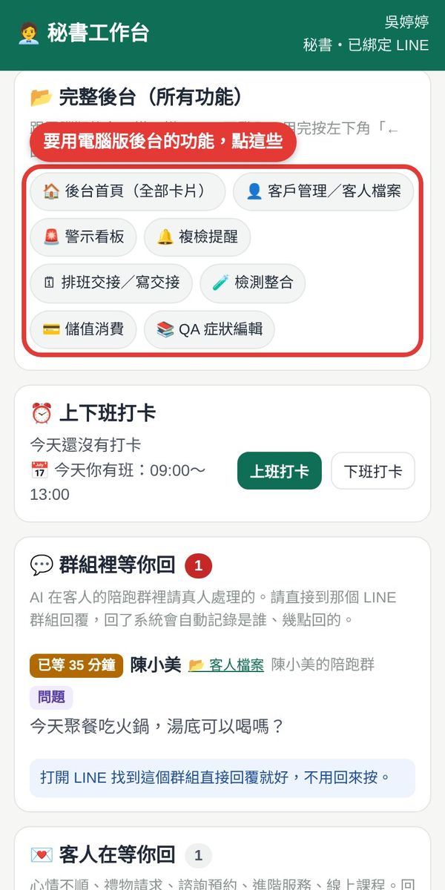
按「下班打卡」就好，不用登出。
右上角出現你的名字就成功了。要看客人檔案、全部客人檢測總表、檢測整合，點「📂 完整後台」裡的按鈕。
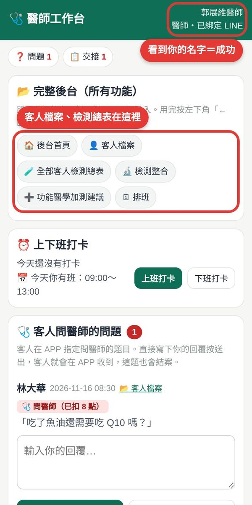
客人在 APP 指定問醫師的題目，會出現在「🩺 客人問醫師的問題」。直接寫下你的回覆，按「送出答案」，客人就會在 APP 收到。
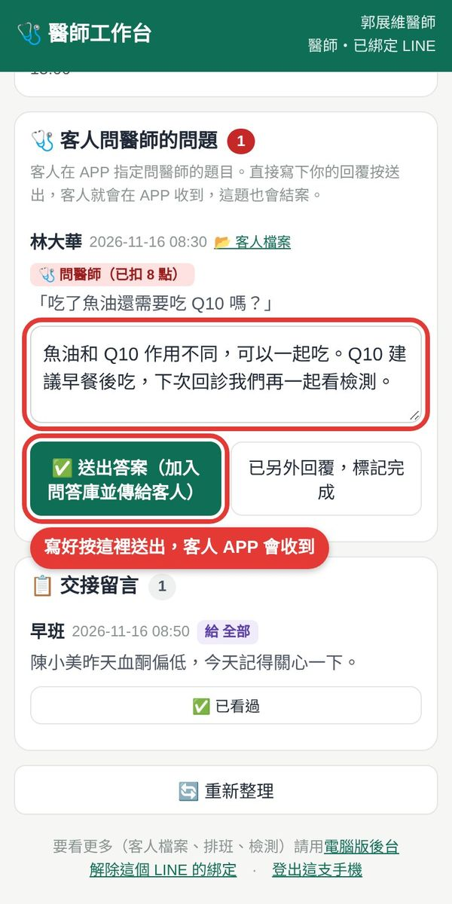
右上角出現你的名字就成功了。這裡只會看到指派給你的學員。點「📂 學員卡」可以看近期記錄、檢測、運動甜蜜點，也可以寫運動建議（秘書和醫師都看得到）。
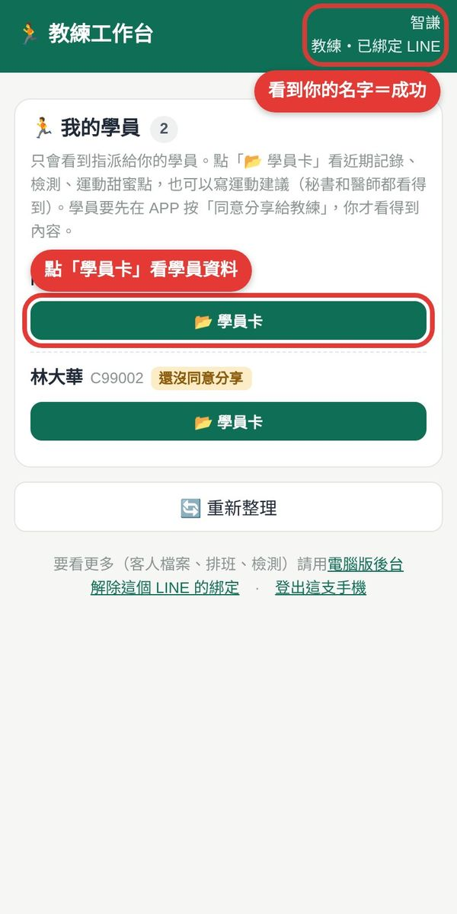